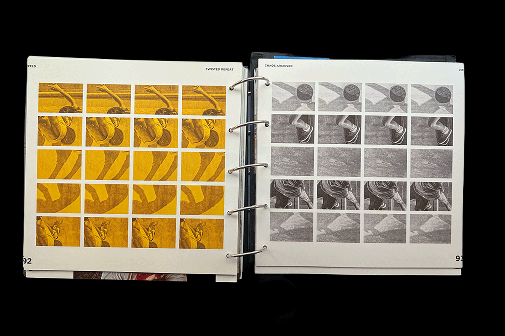
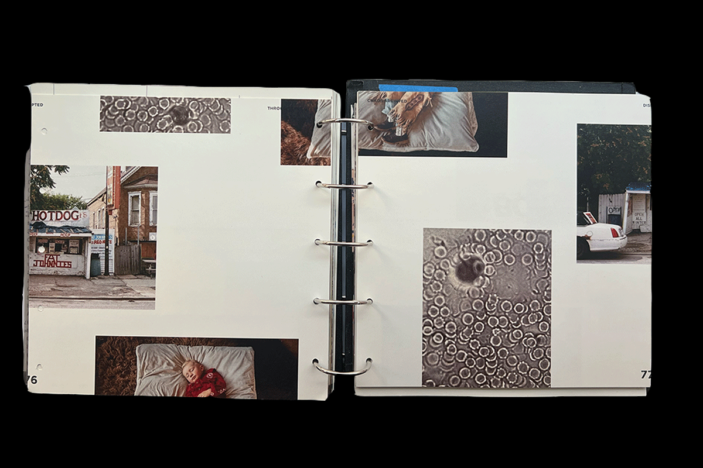
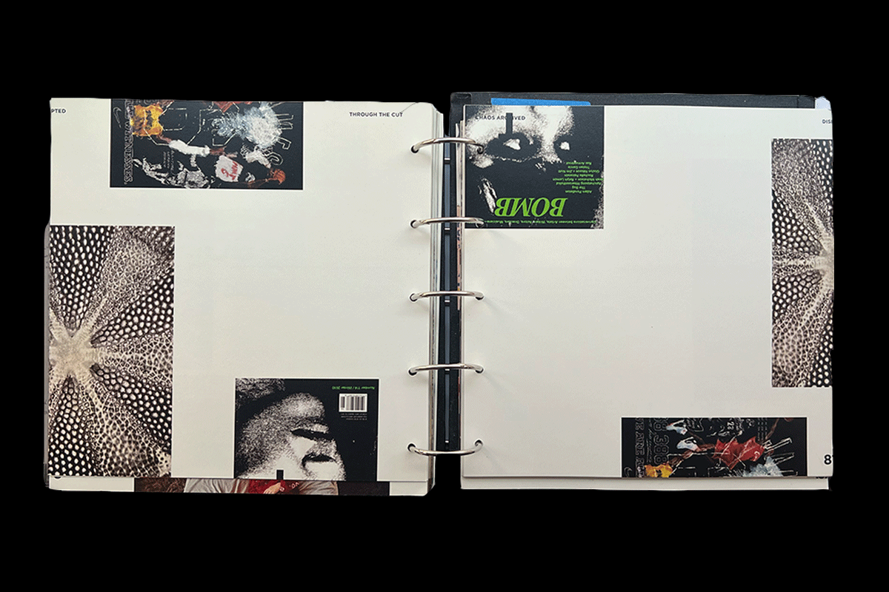
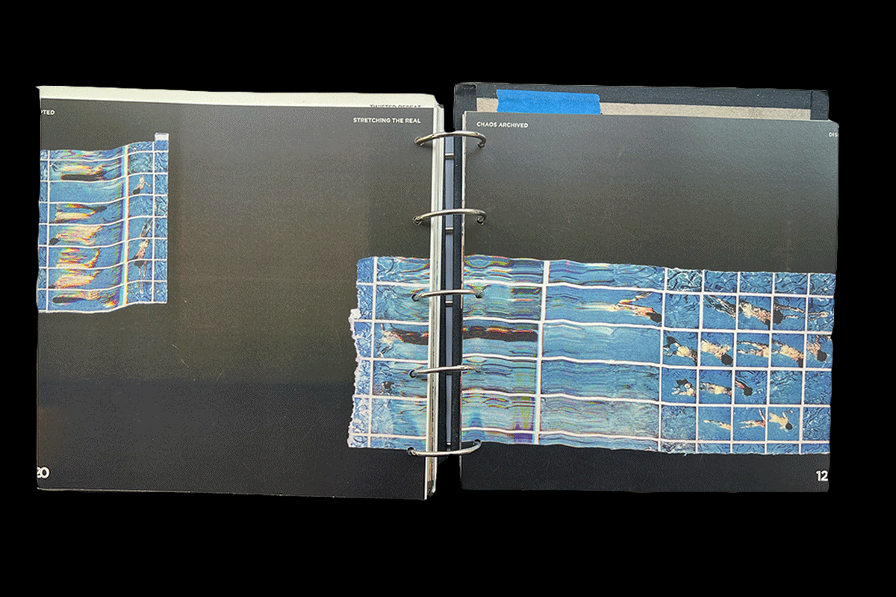
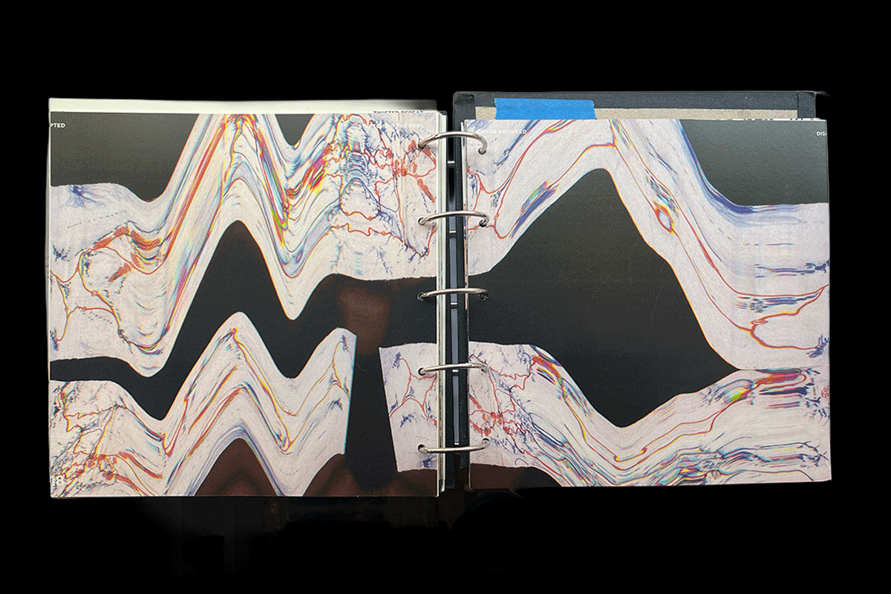

256-Disrupted
Publication
By definition: (a) to break apart; (b) to throw into disorder; (c) to interrupt the normal course of.
This book explores the beauty of disrupting the inconsistencies and intentional chaos that intrigue the eye and reveal different perspectives, leading to unexpected appreciation.
Divided into four sections, each one explores ways to approach the concept.
On a personal matter, the grid wants to play outside.







